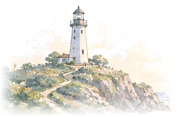
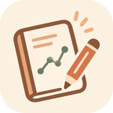
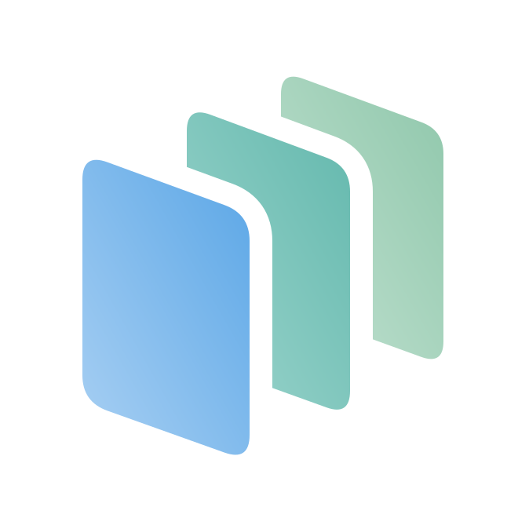
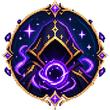

Works
만든 것과 해결한 문제들.
아이디어에서 구현까지, 직접 만들고 지켜 본 과정을 기록했습니다.

BYTE BACK 방어전
가상의 메모 자료실을 운영하며, 단계마다 거세지는 공격을 막아 낸 22단계 웹 서비스 방어 과제입니다.
Veil
방어전을 토대로 만든 보안 에이전트를, 내 PC에서 쓰는 관제 대시보드 앱으로 만들고 있습니다.

성찰 요인 탐색기
오래 쓰면 성찰이 저절로 깊어질까요? 내 리추얼 기록으로 직접 확인해 보는 데이터 저널 앱입니다.
PlanDoSee
계획하고, 실행하고, 돌아보는 다이어리입니다. 로그인한 계정마다 기록이 따로 저장됩니다.

한눈
프리미엄 과제로 만들고 있는 앱입니다. 데모 화면을 먼저 열어 볼 수 있어요.
오늘의 날씨
그날의 날씨를 확인하고 기록해 두는 웨더 노트입니다.
짤 카드 스튜디오
나만의 짤 카드를 만들어 보는 스튜디오입니다.
리추얼과 문장 길이
26일간의 리추얼 기록으로, 지속 기간이 성찰 문장 길이에 영향을 주는지 직접 분석한 자기관찰 연구입니다.

LUMORIA
브라우저에서 바로 즐기는 미니게임입니다.
↗ 표시는 GitHub 같은 바깥 페이지로 이동해요.